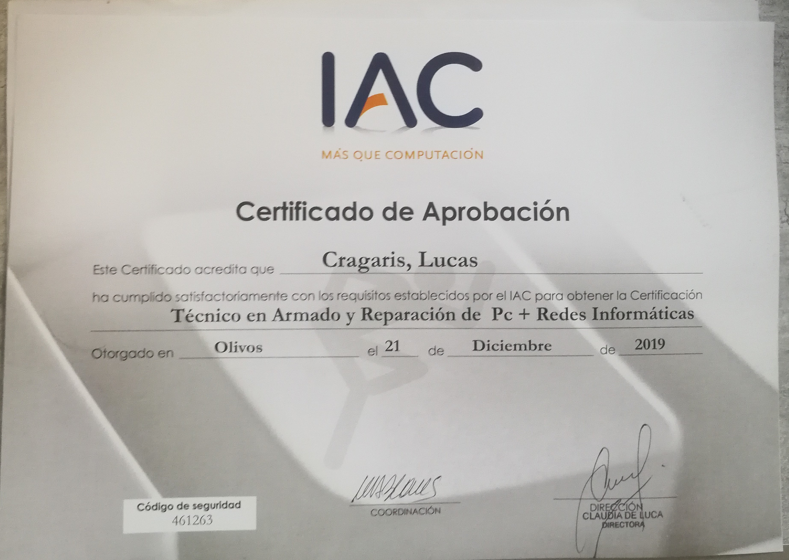

Curso completo de reparación de PC, uso de herramientas, desarmado y armado. Adicionalmente realicé un curso de Redes informaticas donde aprendí el manejo e instalación de servidores. 
Fundamentos de las Bases de Datos, Instalar y trabajar con MySQL, Lenguaje SQL, Estructuras de consulta, Operadores, cláusulas y sentencias, Manipulación de datos, Registros y agrupamientos, Construir un modelo de Base de Datos
Fundamentos de la Nube, IaaS, PaaS y SaaS, Modelos de nube pública, privada e híbrida, Servicios principales de Azure, Componentes y Arquitectura, Herramientas de Administración, Seguridad, Privacidad y Confianza, Azure Identity, Trabajar con monitoreos e informes, Planificación y gestión de costos